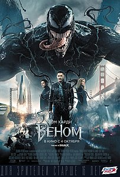
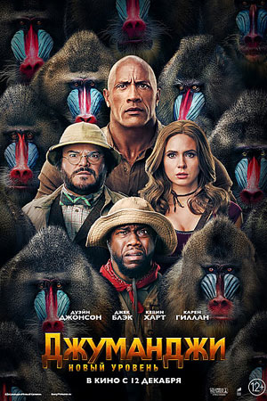

Веном
Журналист Эдди Брок теряет работу после интервью с ученым Карлтоном Дрейком. Коллега Дрейка рассказывает ему, что в своей лаборатории ученый использует инопланетное существо в экспериментах над людьми. Прогулка туда превращается для него в настоящий кошмар: Эдди оказывается носителем чужеземного симбиота. Но Дрейк не хочет просто так легко расставаться со своей собственностью и начинает преследова
ТрейлерДжуманджи: новый уровень
Чтобы спасти одного из приятелей, остальным приходится вернуться в игру. К их удивлению, правила Джуманджи изменились, и все идет наперекосяк. Чтобы выжить друзьям предстоит отправиться в путешествие по самым неизведанным и таинственным уголкам игры — от засушливой пустыни до заснеженных гор.
ТрейлерАнгелы Чарли
.jpg)
История о новом поколении сильных и прекрасных шпионок, работающих на международное агенство Townsend и загадочного босса по имени Чарли.
ТрейлерМой шпион
Самый суровый агент ЦРУ, выполняя сверхсекретное задание, случайно попадает на камеру 9-летней девчонки. Софи готова сохранить все в строжайшей тайне, если Джей-Джей научит её быть настоящей шпионкой.
ТрейлерСтарые счёты
Переведено с английского языка.-A Score to Settle - американский боевик-триллер 2019 года режиссера Шона Ку. В ролях Николас Кейдж и Бенджамин Братт. Он был выпущен 2 августа 2019 года на RLJE Films
ТрейлерСумерки
Переведено с английского языка.-«Сумерки» - это серия из пяти романтических фэнтезийных фильмов на вампирскую тематику от Summit Entertainment, основанных на четырех романах писательницы Стефани Майер. В фильмах снимались Кристен Стюарт, Роберт Паттинсон и Тейлор Лотнер. Сериал собрал более 3,3 миллиарда долларов по всему миру.
ТрейлерТерминатор 2

Прошло более десяти лет с тех пор, как киборг-терминатор из 2029 года пытался уничтожить Сару Коннор — женщину, чей будущий сын выиграет войну человечества против машин.
ТрейлерДжуманджи: Зов джунглей

Четверо подростков оказываются внутри игры «Джуманджи». Их ждет схватка с носорогами, черными мамбами, а на каждом шагу будет подстерегать бесконечная череда ловушек и головоломок. Чтобы пройти игру и остаться в живых, им придется перевоплотиться в персонажей игры: робкий и застенчивый Спенсер превр…
Трейлер